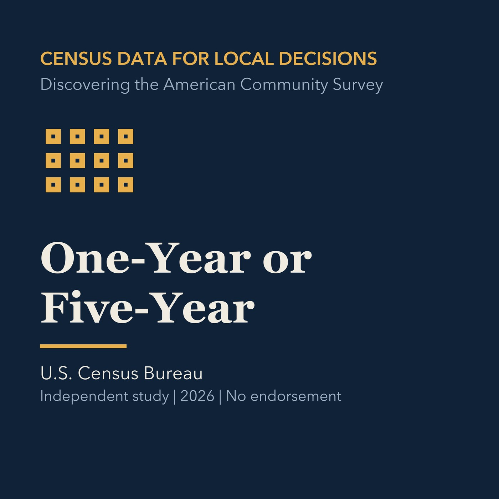

EPISODE 04
One-Year or Five-Year
Distinguishes ACS 1-year and 5-year products and safe comparisons.

- Stable GUID
fff2bb5f-41cf-5e16-9619-7faff5ca9286- Release
- census-academy-v2026.3
- SHA-256
2c448df0a74bec4dc253099ae524ec1e7fd4d11e4ea072ac716735e1dcbed10c